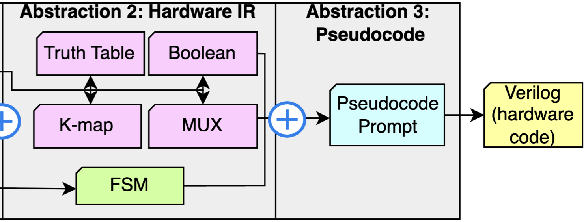
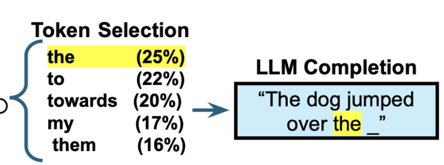
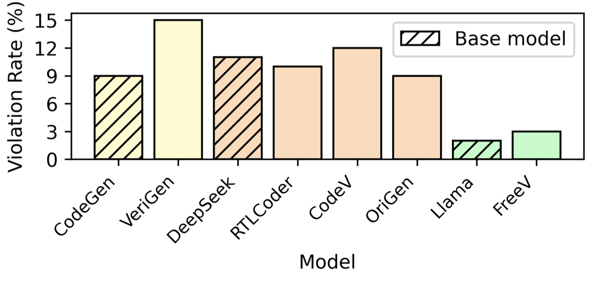
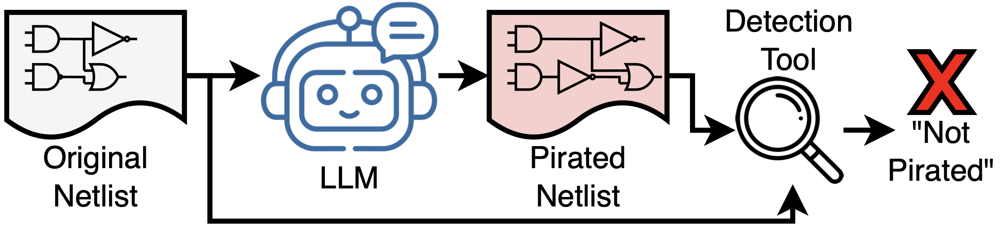
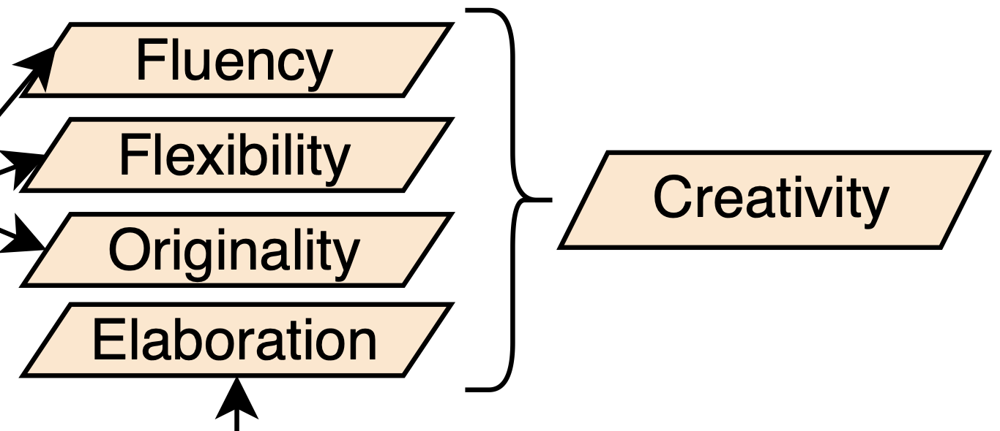

* denotes equal contribution.
Tracing the Logic: Evaluating LLM Reasoning Paths in RTL Generation
Matthew DeLorenzo, Kevin (Phat) Tieu, Jeyavijayan Rajendran
IEEE ICCD 2025

Abstractions-of-Thought: Intermediate Representations for LLM Reasoning in Hardware Design
Matthew DeLorenzo, Kevin (Phat) Tieu, Prithwish Jana, Piyush Jha, Dileep Kalathil, Vijay Ganesh, Jeyavijayan Rajendran

Watermarking LLMs—Challenges and Oppourtunities in Electronic Design Automation
Matthew DeLorenzo, Kevin (Phat) Tieu, Chen Chen, Vasudev Gohil, Jeyavijayan Rajendran
IEEE COINS 2025

Free and Fair Hardware: A Pathway to Copyright Infringment-Free Verilog Generation using LLMs
Matthew DeLorenzo*, Sam Bush*, Kevin (Phat) Tieu, Jeyavijayan Rajendran
DAC 2025

LLMPirate: LLMs for Black-box Hardware IP Piracy
Vasudev Gohil, Matthew DeLorenzo, Veera Vishwa Achuta Sai Venkat Nallam, Joey See, Jeyavijayan Rajendran
NDSS 2025

CreativEval: Evaluating Creativity of LLM-Based Hardware Code Generation
Matthew DeLorenzo, Vasudev Gohil, Jeyavijayan Rajendran
LAD 2024
LLMs for Hardware Security: Boon or Bane?
Rahul Kande, Vasudev Gohil, Matthew DeLorenzo, Chen Chen, Jeyavijayan Rajendran
2024 IEEE 42nd VLSI Test Symposium (VTS)
Make Every Move Count: LLM-Based High-Quality RTL Code Generation Using MCTS
Matthew DeLorenzo, Animesh Basak Chowdhury, Vasudev Gohil, Shailja Thakur, Ramesh Karri, Siddharth Garg, Jeyavijayan Rajendran
Talks/Workshops/Competitions
-
LAD 2025 GenAI Hackathon: Participated in the 2025 LAD GenAI Hackathon in the SLM category, assisting two TAMU teams. One team placed 1st in two LLM problem categories (Google and ASU).
-
TSS/ETS 2024: Contributed to the development of a tutorial session on LLMs and their applications in hardware design and security. Presented to 20+ attendees at ETS 2024.
-
ESWEEK 2024: Presented a workshop session to 20 attendees on LLMs and their applications in hardware.
-
DAC 2024 GREAT Workshop: Assisted in developing a workshop session in which participants utilize LLMs to generate a complete hardware design from start to end. Aided 100+ attendees in the workshop.
Experience
-
Synopsys: Generative-AI Intern
(Fall 2025).
-
LyondellBasell: Cybersecurity Architecture Intern
(Summer 2023).
-
TAMU Student Engineering Council (SEC): Student Engineering Intern
(Summer 2021).
Awards
-
CSME/SCALE Fellowship
(Fall 2023 - Present).
-
Michael Powell Fellowship
(Fall 2024 - Present).
-
DAC Young Fellow
2024, 2025.
-
Jacobs Cybersecurity Graduate Fellowship
(Fall 2023 - Present).
-
Engineering Undergraduate Dean's List
(Fall 2019 - Spring 2023).